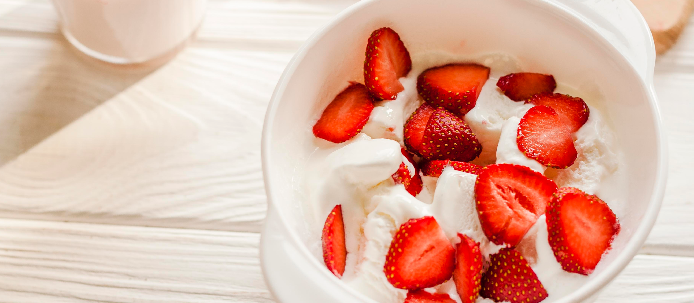

Fresas con crema
Un postre clásico y encantador que destaca por la frescura de las fresas naturales, combinadas con una crema
suave y dulce. Perfecto para disfrutar en días calurosos o como el broche dulce y ligero de cualquier
comida.

Ingredientes
- 500 g de fresas frescas, lavadas, sin hojas y cortadas en mitades o cuartos
- 200–250 ml de crema para batir (nata para montar)
- 2–3 cucharadas de azúcar, ajustable al gusto
- 1 cucharadita de extracto de vainilla
- Opcional: leche condensada o menta fresca
Proceso
- Preparar las fresas:
Lava bien las fresas, quítales las hojas y córtalas según tu preferencia (mitades o cuartos).
- Batir la crema:
En un bol, bate la crema con el azúcar y la vainilla hasta que se formen picos suaves, una textura
cremosa y aireada.
- Montar el postre:
En copas o vasos individuales, alterna capas de fresas y crema batida. Termina con un toque de leche
condensada si deseas un extra de dulzura.
- Decorar y servir:
Añade hojas de menta fresca por encima para un sabor refrescante. Si prefieres, refrigera unos minutos
antes de servir para que esté bien frío.
Al servir, obtendrás un postre cremoso y delicado, con el contraste vibrante y natural de las fresas. La
crema batida dulce y aireada se fusiona con la acidez suave de la fruta, ofreciendo una experiencia fresca,
ligera y reconfortante. Con toques opcionales como queso o leche condensada, puedes personalizarlo para
lograr una versión más rica o más tradicional según tu gusto.